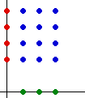
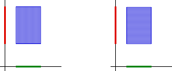
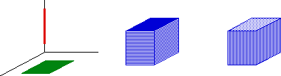

| Formally, the product of two sets, A and B, is the set consisting of all pairs, the first element of each pair coming form A, the second element coming from B. |
| For example, |
|
| { |
| Geometrically, we can think of arranging the sets in perpendicular dimensions. For example, placing A along the x-axis and B along the y-axis, the product lies in the x-y plane. |
|  |
| Extending A and B to line segments, we can think of the product as a horizontal line segment's worth of vertical line segments (left), or as a vertical line segment's worth of horizontal line segments (right). |
|  |
| For A a filled-in square in the xy-plane and B a line segment along the z-axis, the product, a filled-in rectangular box, can be thought of as vertical line segment's worth of horizontal squares (left), or as a horizontal square's worth of vertical line segments. |
|  |
Return to the algebra of dimensions.